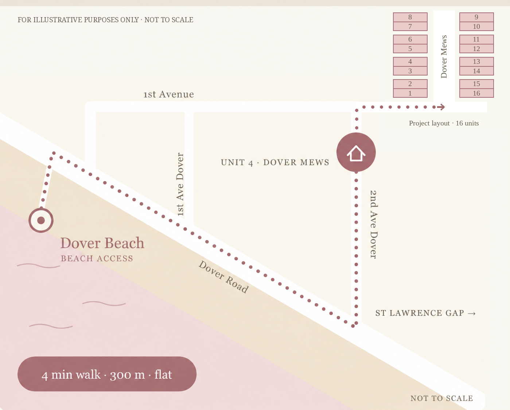
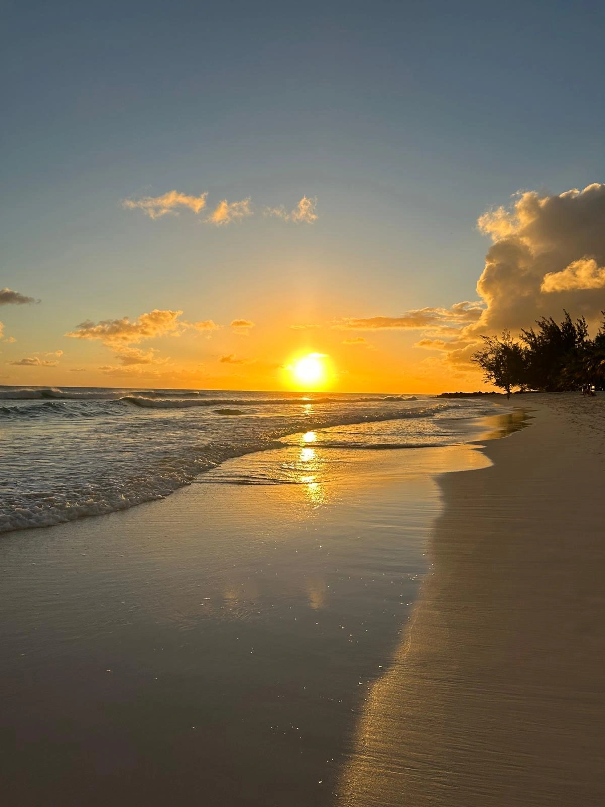

Location
Dover Mews is a short 4-minute walk from Dover Beach in Christ Church, on the south coast of Barbados. Soft white sand and calm turquoise water are on the doorstep, with the restaurants, bars and shops of St Lawrence Gap close by.
2nd Avenue, Dover, Christ Church
Open location in Google Maps
The walk to Dover Beach

Map for illustrative purposes only — not to scale.

Come and discover Dover Mews
Speak with us and arrange a time to see the townhouses.